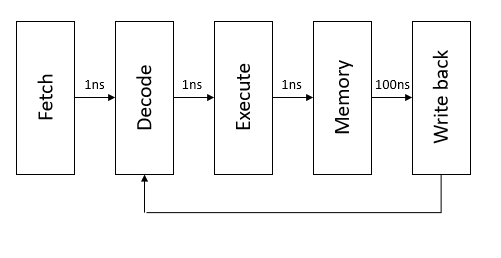
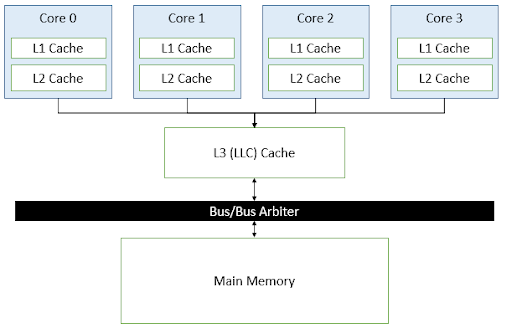
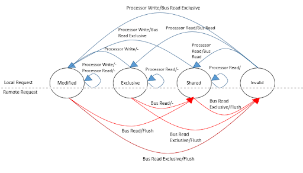
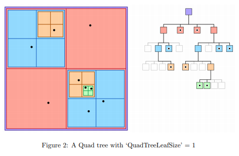
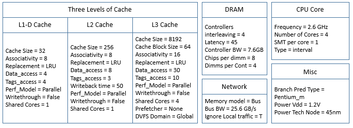
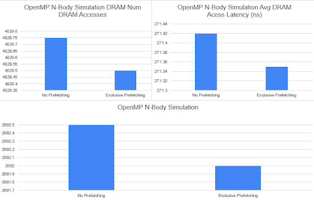
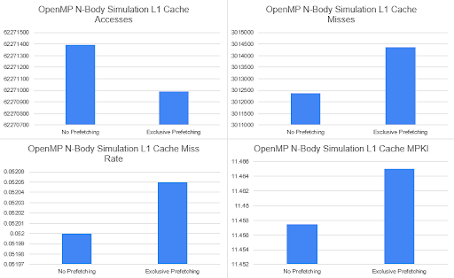
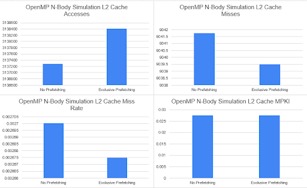
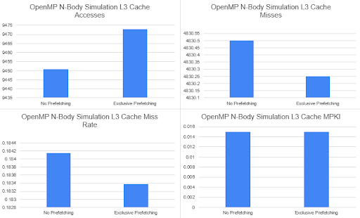
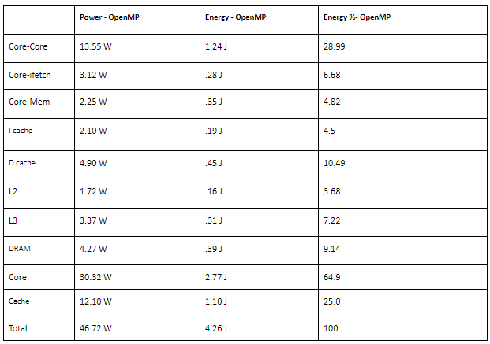

We analyzed the effects of software prefetching with and without exclusive ownership. Utilizing pthreads, OpenMP and OpenMPI, we attempted to demonstrate the potential contributions of using this prefetching technique.
In short, prefetching is the ability to predict when data will be available to avoid the latency costs of memory.
Consider a simple processor, similar to RISC-V, along with their latency times, that fetches, decodes, executes, loads/stores, and writes back. The total time to load data becomes a bottleneck in a lot of computation, and could reduce this processor’s critical path from 114ns to just 5ns if the memory had already been loaded.

Prefetching can be seen in large cache block requests, hardware-controlled prefetching, or software-controlled prefetching, which is where our project focuses. As computer engineers, we can do several things to hide the effects of memory latency: the first is establish a cache which holds a subset of the data that we want to work on, next is optimizing and reordering code to fit within the cache to minimize data cache misses, after is create enough of a buffer in our out-of-order modern-day processor to hold any misses for loads and stores, then we must add the architecture of hardware prefetchers that can detect simple memory access patterns without giving up too much latency, last is insert software techniques that can help guide our hardware at a more sophisticated level.
Prefetching with ownership is telling the processor that it has an intent to write to the data that it is bringing into the cache. To understand why this is important, our scope from a single processor must be expanded to multi-core functionality. For clarity, our model is now a four-core computer with private L1 and L2 caches (private = only one core can access at a time, L1 & L2 = different levels of cache sizes) and a shared L3 cache (shared = all cores can access).

This model will also follow a MESI cache coherence protocol.

If each processor maintains this protocol, then when the prefetch executes normally it will place the data into the shared state. If the prefetch fetches with intent to write, then it will be placed into the exclusive state. This one step can be incredibly useful and time efficient since the jump from an Exclusive state to a Modified state is quiet to the other processors and reduces contention on our bus.
In order to design an effective prefetching technique, we have to learn what is worth analyzing.
Definitions:
Possible = If addresses can be determined ahead of time
Coverage Factor = fraction of misses that are prefetched
Unnecessary = Data is already present in cache
Effective = Data is in the cache when later referenced
In computer architecture, an evaluation for hardware prefetching depends on a set of simple metrics.
Accuracy = Number of Useful prefetches / Total Number of Prefetching
*Useful meaning we are getting “Effective” prefetches
Coverage = Total Number of Prefetches / Total Unique Accesses
*This gives us our “Coverage Factor”
Timeliness = Number of Prefetches Arriving on Time / Total Number of Prefetches
*On time means prefetching by the time the instruction is called

Our source code mainly came from modifying our pre-existing work from 15-418.
The data structure that was fundamental to Homework 3 and Homework 4 for the class was the Quad tree. The Quad tree was something that we saw immediately as a place to optimize. This Quad tree diagram is taken from the homework. The data is continuously split into four subtrees and recursively called if there are more than a certain number of elements within that subtree.
The data structure used for mandelbrot was a simpler output array, which merely maintained an element’s containment in a mandelbrot set. This array can be visualized to reveal the fractal patterns that the set mimics.
If each processor maintains this protocol, then when the prefetch executes normally it will place the data into the shared state. If the prefetch fetches with intent to write, then it will be placed into the exclusive state. This one step can be incredibly useful and time efficient since the jump from an Exclusive state to a Modified state is quiet to the other processors and reduces contention on our bus.
When looking at how we define a good prefetcher, we can optimize every metric with the use of software prefetching. Because we now rely on the programmer to be smarter about where they want data to be loaded, it should almost always be accurate. The same reason for coverage, a programmer will only request the data it needs for the program run. Timeliness is more complicated because we don’t always know when the prefetcher will actually fetch the data, this is figured out with tuning, but not always guaranteed.
The chance of zero latency could be a fundamental change to how processors operate, however multi-cored systems make software prefetching difficult. With any data that is modified, constant invalidations would be sent to other cores holding data, which could render our prefetching useless. There is also the additional potential benefit of Read-Modify-Write cases where processor asks for shareable copy then an exclusive copy. This reduces requests to 1 which potentially has the effect of cutting down half of all memory traffic. Which reduces contention.
The workload is ever changing and only heuristics about when to software prefetch and when to do so with or without ownership can be applied. However, exclusive prefetching is very amenable to SIMD execution because the data should never conflict with each other.
The mandelbrot algorithm determines inclusivity in the mandelbrot set based on a mathematical computation over a number of iterations. We attempted to improve the performance of the parallelized mandelbrot algorithm by requesting write access to the output array. Given that each index in the output array is only computed in one thread, there won’t exist contention by requesting exclusive access to the address.
Our n-body simulation algorithm took a quad-tree structure to efficiently store and compute nearby neighbors such that gravity could be simulated over our set of particles. In this case, most data was considered read only and thus provided a great place to insert prefetching pragmas for each core to efficiently pull data from DRAM. Because this data is typically only shared, we can find that the MESI shared state will prevent the data from being consistently evicted from the cache. This algorithm should have a high ceiling of optimization due to prefetching given the locality of the data and the speed of each array access, such that we can hide memory latency through prefetching while computations are being done on previously accessed data. Here we will be able to see the efficiency of write based prefetching as well due to the computation of the newParticles vector, which can be prefetched as the computation of the particle’s position is almost finalized in the inner loop.
Our main technologies were similar to the ones used in 15-418, OpenMP, OpenMPI, and Pthreads, with the addition of a simulator, Sniper.
OpenMP is an API that can support multi-platform shared memory multiprocessing, while OpenMPI is a message passing interface between multiple computers. Pthreads help establish concurrency of our program by spawning new children threads to be mapped to different CPUs.
Sniper is an x86 simulator that is able to simulate multi-core systems, but also allows us to simulate both OpenMP and OpenMPI with minimal extra setup. Sniper also provides statistic collection and different ways to modify the hardware prefetcher in x86.
The problems from the homework are mapped similar to how they were in class, however with Sniper, one core is used to simulate many cores. With the addition of adding in prefetching, we can now see how different cores are contending for the data they are operating on. If there is not enough data to create logical boundaries and the prefetcher continues to bring the wrong data into the wrong core, then there is the possibility of many invalidations being sent, which would significantly reduce the timeliness and effectiveness of our prefetcher.
For the other algorithms, the use of Pthreads allows for easy multicore mapping, with each child thread absorbing one processor.
Our largest point of optimization and time was finding the correct simulator to match our specifications. Initially we wanted to use our past experience with the simulator Gem5. However this proved as a problem when trying to support our specific prefetching instructions and the use of OpenMP and OpenMPI because the version of Gem5 previously used wouldn’t support any of these functionalities with its “Syscall Emulation” mode. The next option with Gem5 was to try to run in “Full System” mode which was a real-time execution of any given image. The “Full System” mode, however, was extremely lacking in documentation and resulted in multiple errors and multiple hours of futility. We then decided to use ZSim which should’ve allowed us the support that we needed, but ran into similar problems as Gem5. The saving grace that allowed for easy and simple simulation was when we discovered Sniper, which is a simulator that “allows one to perform timing simulations for both multi-program workloads and multi=threaded and shared-memory applications with 10s to 100+ cores.”
Other optimizations that we made were relating to the source code. Software prefetching relies on Software Pipelining, which needs to be tweaked based on the processors memory latency. This requires a lot of fine tuning on where to place our prefetching blocks because the prefetch request must be made so many cycles before the memory access in order for the prefetch data to actually be used.
Preexisting code came from the Homework 1, 3, 4 from 15-418.
Found here:
Homework 1
Homework 3
Homework 4
Our original goals when we first started the project were ambitious, but our updated goals were well within our reach and we are able to see the differences between each benchmark. These goals were not as drastic as we had hoped, and it’s possible that the discrepancies between runs could just be discrepancies. We did not see as significant of an improvement as planned, but the reasons for this will be discussed in our Limitations.
We want to analyze the performance based off of our three metrics laid out here.
Accuracy should be close to 100%, coverage should be as large as possible, and timeliness should never be as large as possible since we are able to command exactly when prefetches should happen.
Code setup:
In order to include software prefetching in our code, we used the GNU extension __builtin_prefetch(); This extension takes in an address as a main argument, which is the target address to prefetch, along with two optional arguments. The first of these is (r)ead/(w)rite (input as 0/1, respectively). This argument specifies whether to prefetch the data in an exclusive state or shared only state, depending on whether the data is expected to be written to. The other argument to __builtin_prefetch is the temporal locality, which can range from 0 to 3. Higher values of temporal locality indicate to the compiler that the data should be maintained in all cache levels if possible, while a locality of 0 indicates that the data should be discarded once accessed.
In order to effectively implement these prefetches, we used a software pipeline with a prolog and steady state. These allow the CPU to access the necessary prefetches for the first iteration of the algorithm prior to computing. In the steady state, the CPU prefetches the data necessary for the next iteration of the algorithm. As we were simply analyzing the difference between write based prefetching versus read based prefetches we didn’t optimize the prefetcher with an epilog state, which would reduce the overhead caused by our prefetches. This is a modification that could be made in the future to analyze further optimization.
In order for the compiler to refer to the __builtin_prefetch(); optional arguments, we used the following command to compile our programs:
g++ -O3 -mprfchw file_name.cpp -c
Sniper setup:
Our model for sniper is based off the configuration file of Intel’s Xeon Gainestown and Intel’s i7 Nehalem.

Disclaimer: Sniper has some discrepancies when it comes to cache statistics. From the website it says,
“The cache access rates should look comparable to real hardware, but the miss rate can in some cases be rather different. The reason for this is that the overlapping misses in Sniper are counted as hits, while on real hardware they would count as cache misses. Internally, Sniper's memory subsystem completes each access, gets the result immediately, and uses a queuing model to determine contention. Therefore, a miss in real hardware would be a hit in Sniper.”
We do not expect our results to be far off from our predictions, but this could be the reason why our performance for certain statistics are better/worse.
Our data will be representing statistics of total runtime, L1-L3 cache access, misses, miss rate, and misses per kilo-instructions, DRAM number of access and latency, and cache coherence traffic from DRAM. Sniper provides these statistics core-based, but for the purpose of condensing this data we will be presenting it as an average over the cores. We also took a look at the different McPat statistics.
Our data looked extremely similar between runs of OpenMP, OpenMPI, and Pthreads. This is an example of how similar the runs were with OpenMP.




McPat Statistics

The size of the problem theoretically helps us in this case, but we have not seen the improvements that we were hoping for. If, in theory, every data load is already present in the cache, then we should be able to see extreme amounts of improvement. This improvement would be maintained as the size of the problem increases, unless the amount of data needed in the cache at any point in time were to exceed the bounds of the cache size. We would’ve been able to move on to further analysis of larger workloads had we been able to find the general improvement with the baseline algorithm that we were looking for. As we continue to look into the subject in the future and when we pinpoint the sources of the errors and limitations of our code, we will move forward with more tests and performance metrics for different workloads to analyze whether there is a limit to the effectiveness of prefetching with these algorithms on larger workloads.
Some of the limitations to this project’s success include the prevalence of hardware prefetching. We were unable to determine the cause for the lack of difference in our runs with and without prefetching. Whether it was stepping through the code using gdb to ensure that prefetch instructions were being read or analyzing the disassembled executable files to determine if the prefetch commands were being used by the compiler, we could not find a reason for the lack of computational difference. Another possibility is that the multi-threading functionality of our base programs already hid the prefetching benefits by switching contexts when a cache miss was hit. Both in Sniper and in the GHC machines, once the program counter reaches the instruction for the prefetch it could read that as a cache miss, given that the prefetch is accessing DRAM memory. In an attempt to provide speedup, the OS may decide at this point to context switch to another thread or task to increase the performance of the program. This doesn’t make as much sense as a reason for the lack of speedup and performance of the shared memory model as the different processors should not follow the same protocol. On Sniper, this makes sense because the simulator uses a single core machine to simulate a multi core program.
Our project can be broken down into different time sections depending on the algorithm we are running. For example, mandelbrot is difficult to break down into subsections given that the entire algorithm is simply a computation of the output array. However, when it comes to algorithms like n-body simulation, like we saw in assignments 3 and 4 we can break down the code into separate steps including the simulation step and building of the quadTree data structure. Here we attempted to increase the performance of both of these sections of code, however, both in our simulation and running our program on the GHC clusters we were unable to see any difference in computational efficiency in either simulateStep or in buildQuadTree. The failure to achieve speedup is discussed further in the Reflection portion of the report.
Software prefetching is only useful for CPUs as GPUs and other smaller core systems don’t use the same cache hierarchy, so we are happy with our choice. Hardware prefetching is slightly different as it can be useful to improve both computational and energy efficiency within GPU programs, but that wasn’t the focus of our research.
When we began the project we believed we would be able to get incredible amounts of speedup and reduce cache misses significantly, but we didn’t. We believe there are a couple reasons for this as well.
1. Software Prefetching is a hint.
Software prefetching is a good idea in theory, but in reality, only shows itself as a hint to the processor. Even with accurate temporal locality and timeliness, we could not see our results improve.
2. The simulator is not perfect.
We ended up with Sniper as our simulator of choice, but cannot be entirely sure that it is actually executing our prefetching instructions. We have looked through the disassembly of our object files and have seen promising results, but it is not reflected with what the data shows.
3. We underestimated the hardware prefetcher/did not outthink it.
We assumed that a basic implementation would suffice for improvements, but it’s entirely possible that our implementations were outshined by the hardware prefetcher. We did not expand too far out into complex access patterns and were trying to show the difference between exclusive and non-exclusive prefetching. We did find one way that this could be circumvented, but did not yet attempt the approach. The approach is to exploit fenced operations and mutually exclusive locked memory references. We predict that since threads and cores can be waiting during these two operations, we can load the data before it is accessed with software prefetching.
Additionally, this project included the steep learning curve of setting up a full-system simulation that could model the logical flow of the program through the cores, to the cache, to the DRAM. A large amount of time was spent attempting to set up full-system simulators using both gem5 and zsim that we were unable to bring to fruition. We didn’t believe that our performance metrics using simply timing on the GHC computers were relevant, given that our prefetches were properly laid out both in the code and in the assembly of disassembled executables. We were able to notice the difference between the inclusion of prefetchw and other prefetch assembly calls, and assumed that they would provide at least some difference in the simulator. Our initial assumptions on why these metrics were not providing speedup on the GHC machines were that hardware prefetching was overriding or already performing the software prefetches we were inserting. In the least, we expected the prefetch pragmas we inserted to cause a slowdown in the code, if only due to overhead. There still remains investigation to be done as to why there is no difference in performance, mainly because our prefetch pragmas were being correctly inputted by the compiler into the executable.
We had several reach goals for this project that we were unable to get to due to the steep learning curve to even get started with the project. Software prefetching is not an intuitive concept with having to request data way before it's actually accessed, so we would still like to see a machine learning based model of prefetching insertion. Unfortunately this is outside of the scope of this class and both of our experiences with the knowledge of machine learning and compilers, but we believe that this automatic insertion could be extremely helpful when prefetching for complex data structures that hardware cannot detect or would take too long to detect. The current scope of the project only followed semi-static array accesses in n-body simulation and mandelbrot generation, but in other algorithms with more dynamic memory access it would be beneficial to have an automated best-fit prefetch insertion algorithm/machine learning model.
http://www.cs.cmu.edu/afs/cs.cmu.edu/academic/class/15418-f19/www/lectures/20_prefetching.pdf
https://stackoverflow.com/
questions/30003361/difference-between-prefetch-for-read-or-write
https://gcc.gnu.org/onlinedocs/gcc/Other-Builtins.html
https://stackoverflow.com/questions/40513280/
what-is-the-effect-of-second-argument-in-builtin-prefetch
https://users.elis.ugent.be/~leeckhou/papers/sc11.pdf
https://www.felixcloutier.com/x86/prefetchw
https://www.archive.ece.cmu.edu/~ece740/f11/lib/exe/fetch.php?media=wiki:lectures:onur-740-fall11-lecture24-prefetching-afterlecture.pdf
https://c9x.me/x86/html/file_module_x86_id_252.html
http://snipersim.org/documents/sniper-manual.pdf
http://www.gem5.org/docs/html/index.html
http://www.gem5.org/docs/html/index.html
https://ieeexplore.ieee.org/document/752654